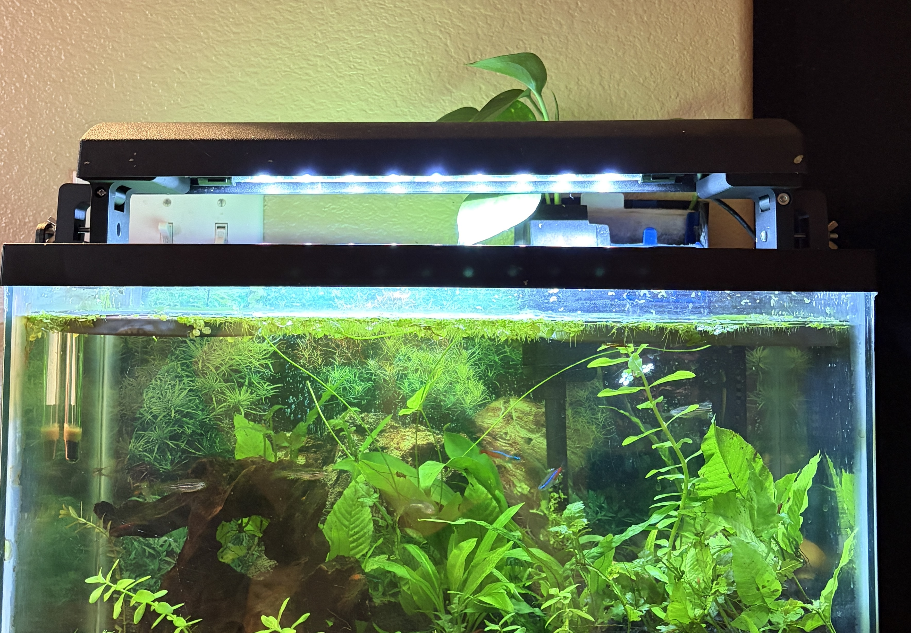
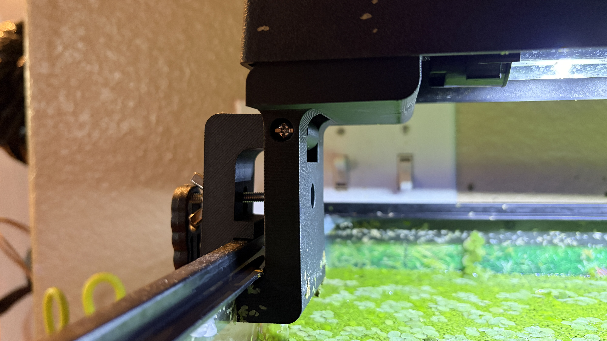
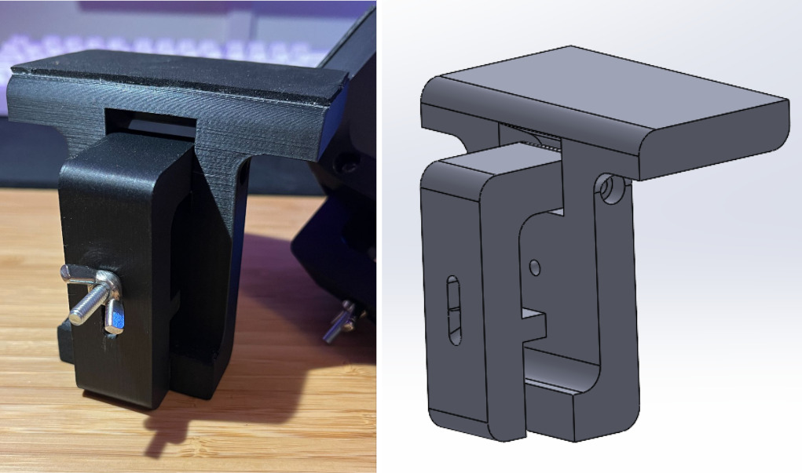

Fishtank Light Mount
Project Overview
This design process was guided by a variety of dimensional, material, and functional constraints. One of the primary requirements was that the mounts clamp onto either side of a fish tank to suspend a lightbar to a specified height. The final design was intuitive to use, reliable, and stable. Aquarium-safe foam pads line the contact surfaces for the mount to reliably distribute the clamping force. Special consideration was given to ensuring that the clamp/mount would open wide enough to fit over the rim of the tank. Although relatively simple, this project gave me the opportunity to solve a real-world problem through thoughtful engineering design. A lesson I took from this project is that even seemingly simple problems require thorough analysis and identification of all specifications and constraints.

Specifications
- Mounts must secure the light at 2.5 inches above the top lip of the tank
- The mounts must be constructed solely from aquarium safe materials
- Family members with limited fine motor control must be able to manipulate and operate the mechanism
- The mounts must be stable and secure such that they retain their ability to support the light without need for readjustment or further manipulation after initial deployment
Design Summary
| Quantity | COST | |
|---|---|---|
| n/a | 3D PLA filament | $2.26 |
| 1 | Foam sheet | $0.73 |
| 4 | #8-32 x 1-3/4 in. Zinc Plated Machine Screws | $1.57 |
| 2 | #8-32 Zinc Plated Wing Nut | $0.53 |
| TOTAL | $5.09 |
The final design consists of two PLA 3D printed parts that pivot around a machine screw. PLA was chosen because it is an aquarium-safe material. A long bolt runs through both pieces with a wider cutout on the rear piece so that it can flip up when the mount is opened to fit over the edge of the tank. A wing nut is screwed onto this bolt to tighten the clamp onto the tank edge. This particular wingnut was chosen because it satisfied the requirement of being manipulatable for users possessing fine motor challenges. However, if greater gross-motor accessibility is required, a larger handle could easily be designed to fit over the wingnut. Aquarium safe foam padding lines the clamping surfaces of the mount, ensuring that the clamping force is distributed relatively evenly, even if the final position were to be off by a few degrees. Analysis was performed to ensure that the final clamping force would not exceed the estimated load capacity of the joint. If I were to go back and optimize this project, I would perform more in-depth analysis to determine the ideal wall thickness and print infill to support the required forces while also reducing cost spent on filament.
